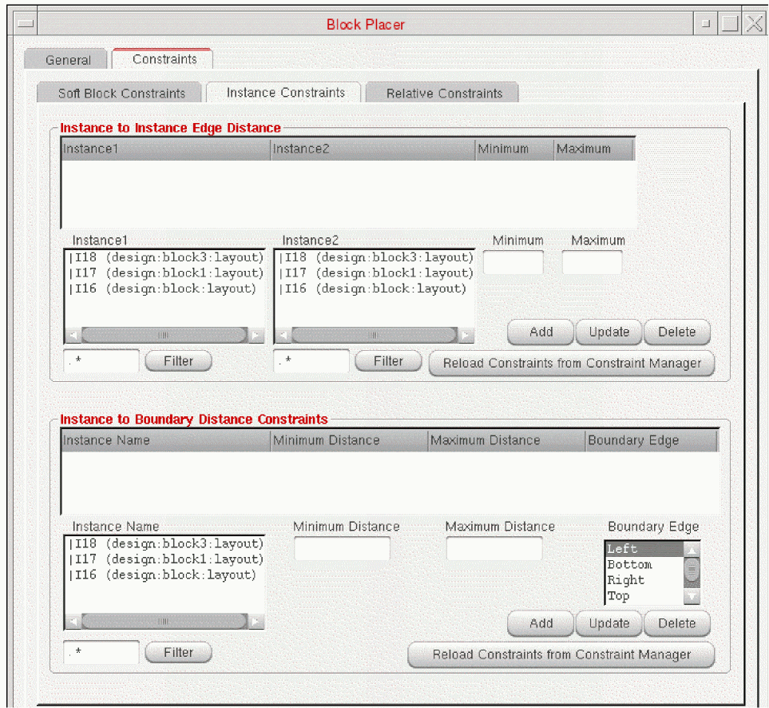
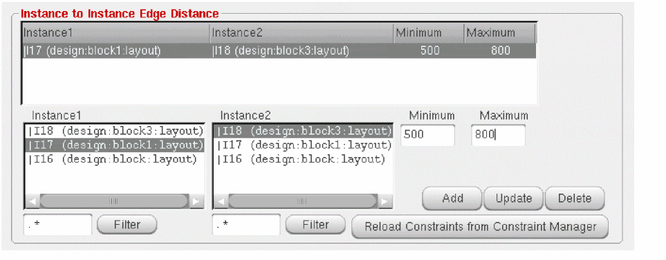
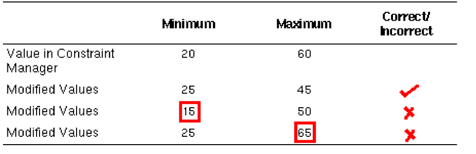
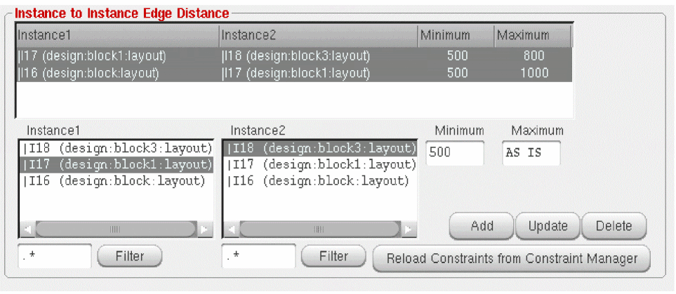

Adding, Updating, and Deleting Instance Constraints
You can add, update and delete the side constraints for soft blocks using the Instance Constraints tab present in the Constraints tab of the Block Placer form.
To modify a constraint, perform the following steps:
-
Choose Floorplan – Block Placer command to open the Block Placer form.
In Layout EXL and higher tiers, choose Plan – Block Planning – Place Blocks. -
In the Constraints tab, choose Instance Constraints sub-tab. It has the following sections as shown in the graphic:
 - In the Instance To Instance Edge Distance section, select the instances Instance1 and Instance2 between which you want to specify the distance constraint.
-
Specify the minimum and the maximum distance in the Minimum and Maximum fields.
The Minimum and Maximum fields display the minimum and maximum distance values as shown in the image.
If a distance constraint exists in the Constraint Manager, you can modify the minimum and maximum distance values between two instances within the limits specified in the Constraint Manager.
For example, if the distance constraint between two instances Instance1 and Instance2 in the Constraint Manager are specified as 20 and 60, you can specify the minimum and maximum distance values between 20 and 60. This means that the minimum distance that you specify should not be less than 20 units and the maximum distance should not be more than 60 units. The table below lists some of the possible incorrect values.
If the values you specify violates the distance constraint in the Constraint Manager, a warning message is displayed in the CIW. In addition, if you specify only the minimum value, the maximum distance will be equal to the maximum width and height of the chip. Similarly, if you specify only the maximum value, the minimum distance will be zero. -
Click Add.
The new constraint gets added. However, if the Minimum and Maximum fields are empty, the new constraint is not added and an appropriate warning message will be displayed. - Select a constraint that you need to update. Select the row that lists the constraint in the table and enter the new values for the minimum and maximum distance in the Minimum and Maximum fields.
-
Click Update to update a constraint.
The values are updated.
You can also select multiple constraints and update them simultaneously. If you select multiple rows, Minimum and Maximum fields display the values if they are same, else it displays AS IS as shown below.
 -
Click the Reload Constraints from Constraint Manager button to reload the constraint values in the Constraint Manager.
Only the constraints coming from the Constraint Manager are reloaded. The other additional constraints added in the GUI remain.
Deleting Instance Constraints
-
Click Delete after selecting the row that list the constraint in the table to delete a constraint. You can also select multiple constraints and delete them simultaneously.
Constraints that are populated from the Constraints Manager cannot be deleted.
Related Topics
Adding, Updating, and Deleting Soft Block Constraints
Adding, Updating, and Deleting Instance To Boundary Constraints
Adding, Updating, and Deleting Relative Constraints
Return to top